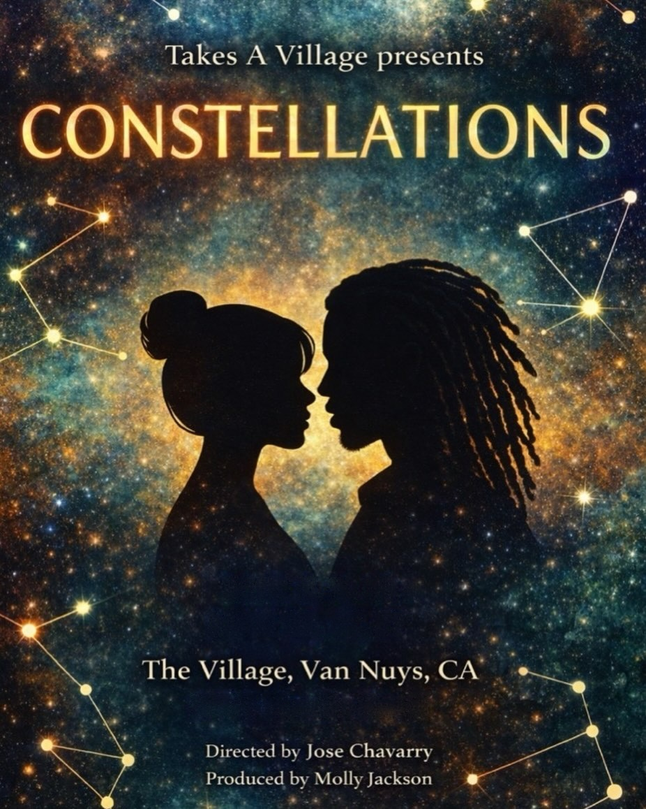
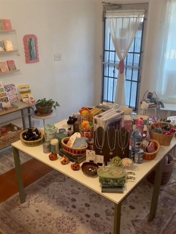
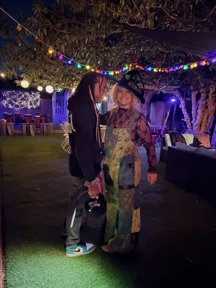

Hello, Friends!
We're Takes a Village, a Los Angeles nonprofit theater company. We started where the village itself began, alongside you, in our backyard, with our first production, Constellations. We have many more goals and plans as we bring this vision to life, and we can't wait to share what's next.
What's Next
Upcoming Events
Our next production is in the works. Follow us on Instagram and check back here for announcements.
@takes.a.village.laPast Production

Constellations
Takes a Village · An Intimate Backyard Performance
A story about love, physics, and how we try to connect, performed live and up close, right where the village began. Our first production filled the backyard with theater, cocktails, and evenings of connection and shared experience. Thank you to everyone who joined us at The Village.
May 8–23, 2026Seven performances
The Village · Van Nuys, CA
Directed by Jose Chavarry · Produced by Molly Jackson
Opening Night
[Eight photographs from the night. Swipe sideways for more. Tap or click one to see it larger.]
.jpg)
.jpg)
.jpg)
.jpg)
.jpg)
.jpg)
.jpg)
.jpg)
The Archive · Season One
A Year in Three Acts
Everything we've made together since the village began, written down the way theater people keep their memories: as a script.
Vol. 1Winter – Fall 2026Eight ScenesAdmit All
Before the Curtain
Prologue
-
Jan192026

Drum Circle
Family Day at LACMA
Los Angeles County Museum of Art
[Enter four hundred strangers. The Los Angeles skyline plays the backdrop.]
Invited to represent multigenerational artistry, our family, kids included, led a community drum circle for some four hundred people of all ages.
Act One · Spring
The Village Begins
-
Apr212026
Scene 1 · Founding
Hello, Friends!
The Village · Van Nuys
[A backyard in Van Nuys. Lights up.]
Takes a Village launches as a nonprofit with one promise to start: stage a play we had always wanted to do together, right where the village itself began.
-
May8–232026
Scene 2 · First Production
Constellations
The Village · Van Nuys
[The backyard becomes a theater.]
A story about love, physics, and how we try to connect, played up close with cocktails and conversation. One last performance was added on May 23, with a party after.
- Directed byJose Chavarry
- Produced byMolly Jackson
Intermission
House lights up
Act Two · Summer
The Village Travels
-
SummerJuly2026

Scene 1 · Drumming
Special Camp Joins the Village
With Special Camp
[Enter the campers, each with a rhythm of their own.]
We had the privilege of making music with students with special needs, a room full of creativity and joyful expression. Some days you feel like you are living your purpose. This was one of them.
-
SummerAug2026

Scene 2 · Teacher Workshop
Arts in Education at CSUN
California State University, Northridge
[A room full of teachers. Each one is handed a drum.]
A professional development day on the power of the arts in the classroom. Our session used drumming to teach leadership, teamwork, self-expression, and the confidence to take positive risks.
Act Three · Fall
The Turning Season
-
MonthlyFall2026

Photo: Golden Hour Studio Scene 1 · Art & Journaling Club
Note to Self
With Golden Hour Studio · El Sereno
[The season turns. Pens out.]
An evening of guided prompts, reflection, and art made in community, returning each month with a new theme.
- Fall EquinoxSept 22
- Magic & SpellsOct 21
-
Oct262026

Scene 2 · Gathering
Full Moon at The Village
The Village · Van Nuys
[Enter fifty witches. The Village glows.]
We celebrated the full moon with about fifty witches, and the backyard lit up with an abundance of energy. Thank you to every Villager who blessed us with their presence.
-
Nov222026

Scene 3 · Acting Workshop
Unmasked: The Actor's Journey
Casa 0101 · Boyle Heights
[Strip away the performance. Find the truth.]
A workshop to open a company's very first rehearsal. Working with kids is fun. Working with big kids gets deep.
- InstructorRay Auxais
[Exeunt, pursued by a drum circle.]
End of Season One
Season Two is still being written. Catch the next scene as it happens.
@takes.a.village.la